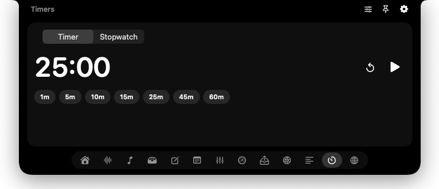

Dictation
Think it. Say it. Done.
Hold ⌃⌥ and talk. Groq Whisper turns your voice into text; AI tidies it up. Keep your history. Retry a missed take.
Bring your own Groq API key.Your everyday Mac tools, one hover away.
A free, open-source notch with room for anything.
Free · macOS 14.2+ · Apple silicon & Intel
curl -fsSL https://nook.motkan.com/install.sh | bashOne hover to open. A whole new way to use your Mac.
SMALL SPACE. BIG UPGRADE.
The little things you do all day,
right where you need them.
Hold ⌃⌥ and talk. Groq Whisper turns your voice into text; AI tidies it up. Keep your history. Retry a missed take.
Bring your own Groq API key.Set each app’s volume, all the way to 200%. Pick your mic and speakers, then pin them as your defaults.
CPU, memory, disk, battery, and network activity. See what’s working hard without opening another window.
Your to-dos, system stats, and focus timer together. Get your bearings, pick a task, and get into it.
Your words scroll right under the camera. Keep your eyes up through the next call, demo, or recording.
Start a quick timer or settle into a focus session. Keep the countdown close and your attention on the task.

Paste your proxies. Connect in one tap. Check your public IP right in the notch.
Jot it down in Notes before it’s gone. Your next idea is always a hover away.
Drag files onto the Shelf, switch apps, then drag them out where you need them.
RIGHT AT HOME ON YOUR MAC
Hover and it opens. Move on and it slips away. Smooth spring animations make a small space feel surprisingly natural.
Two fingers to change tabs. Drag to reorder them.
Give each tab a hotkey. Jump straight to what you need.
No notch? Nook adds one. External monitors included.
Pin it open. Set a different height for every tab.
BUILT TO BE BUILT ON
An HTML/JS folder and a plugin.json. That’s a Nook plugin. Save a change and it’s live. No rebuild. No waiting.
{
"id": "my-widget",
"name": "CPU",
"symbol": "cpu",
"entry": "index.html",
"height": 120
}// Loaded by index.html, alongside a <main>.
const view = document.querySelector("main");
async function refresh() {
try {
const { cpu } = await window.nook.system();
view.textContent =
`${Math.round(cpu.usage * 100)}% CPU`;
} catch {
view.textContent = "CPU unavailable";
}
}
refresh();
setInterval(refresh, 2000);window.nook connects your code to shell commands, fetch, storage, system stats, and notifications.
Declare options in plugin.json. Nook builds the settings form and saves your preferences.
Show live activity on the closed notch. A build status, a countdown, or whatever matters to you.
$ nook new my-widget$ nook open my-widget$ nook logs -f$ nook validateAN IDEA IS ALL YOU NEED
Nook installs a nook CLI and an agent skill for Claude Code & Codex. Your agent gets the tools and the know-how. You bring the idea.
Make a nook plugin that shows my open GitHub PRs.
A PR tracker? A custom dashboard? Your call.
GOOD TOOLS SHOULD BE OPEN
Free forever. Open source under MIT.
No Nook account. No tracking. Just a useful little app.
A FEW GOOD QUESTIONS
Small app. No big mysteries.
Yes. Nook is free and open source under the MIT license. Use it, change it, and share it. There’s no subscription or Nook account. Optional services you connect, such as Groq for dictation, use your own API key and may have their own costs.
Nook runs on macOS 14.2 or later, on Apple silicon and Intel. It works on Macs without a notch, too, by adding a virtual one at the top of the screen. External monitors are welcome.
It won't: Nook is signed with a Developer ID and notarized by Apple, so it opens like any other app. If you ever see a warning, update to the latest version.
Accessibility enables global shortcuts, pasting dictated text and the Mouse tab. Microphone lets you record dictation. Audio capture lets the volume mixer control sound per app. Dictation sends audio to Groq for transcription and uses AI for optional cleanup.
Each tab is a folder with HTML, JavaScript, and a plugin.json manifest. Nook loads it at runtime and reloads it when you edit a file. The window.nook bridge provides native features, including shell access, so only install plugins you trust. Build one yourself, or ask Claude Code or Codex to help. Read the plugin docs
A NEW HOME AT THE TOP OF YOUR SCREEN
Free · macOS 14.2+ · Apple silicon & Intel
curl -fsSL https://nook.motkan.com/install.sh | bash